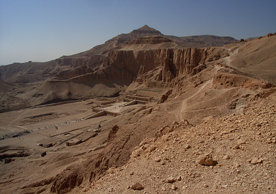

Egypt Trav-E-Log ©
Deir el-Bahri Temple Complex
18 Nov 2010, Luxor, Egypt
-------------------------------------------
Deir el-Bahri is a mortuary temple complex; the first Pharoh to build here was Mentuhotep II, the ruler that reunited Egypt about 2050 BCE, before the first tomb in the Valley of the Kings was constructed. Hatshepsut built a larger temple next to the first in the 18th Dynasty. The last temple built here was by Thutmese II, but these two pharohs also had tombs constructed in the Valley of the Kings.
-------------------------------------------
This is the stunning view one sees if your choice is to hike over the ridge line from The Valley of the Kings. Entire hike takes less than an hour. It is obvious something is below, but one needs to walk down the ridge quite a ways before the restored complex pops into view. |  |
Hatshepsut mortuary temple is the most restored of the three. The two photos on the right were taken near the back of that temple. |
|
Below is a model showing the three nested temples; Mentuhotep II on the left, Thutmese II, and Hatshepsut on the right.
|
|
Question? Contact me at the Juno.com address Dancer2SEAsia.
Life is Good When You Travel! Start planning your next trip!